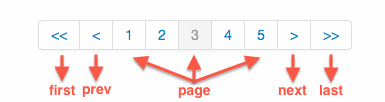

动态分页条是基于Bootstrap的js分页插件（bootstrap-paginator）制作的，它提供了一系列的参数用来支持用户的定制，提供了公共的方法可随时获得插件状态的改变，以及事件来监听用户的动作。
css已合并到interface.css里，只需在页面引入bootstrap-paginator.min.js即可
动态分页条是基于Bootstrap的js分页插件（bootstrap-paginator）制作的，它提供了一系列的参数用来支持用户的定制，提供了公共的方法可随时获得插件状态的改变，以及事件来监听用户的动作。
css已合并到interface.css里，只需在页面引入bootstrap-paginator.min.js即可
<div id="page-example"></div>
<script type='text/javascript'>
var options = {
currentPage: 3,
totalPages: 10
}
$('#page-example').bootstrapPaginator(options);
</script>
组件结构如上图包括5中类型的操作按钮，如：首页(first)、尾页(last)、上一页(prev)、下一页(next) 、以及页(page)。当然这是默然的结构，我们可通过参数对结构及样式进行定制。

| 参数名 | 数据类型 | 默认值 | 描述 |
|---|---|---|---|
| size | string | "normal" | 设置控件的显示大小，是个字符串. 允许的值: mini, small, normal,large。值：mini版的、小号的、正常的、大号的。 |
| alignment | string | "left" | 设置控件的对齐方式，是个字符串， 允许的值用： left, center andright. 即：左对齐、居中对齐、右对齐。 |
| itemContainerClass | function | 该参数接收一个函数，返回一个字符串，该字符串是一个我们自定义的class类样式。当控件内的每个操纵按钮被渲染(render)时，都会调用该函数，同时把有关该按钮的信息作为参数传入。参数：type,page, current 。type为该控件的操作按钮的类型，如上图所示的五种类型：first、prev、page、next、last。page为该按钮所属第几页。current 指示整个控件的当前页是第几页。 | |
| currentPage | number | 1 | 设置当前页 |
| numberOfPages | number | 5 | 设置控件显示的页码数.即：类型为"page"的操作按钮的数量。 |
| totalPages | number | 1 | 设置总页数 |
| pageUrl | function | 实际上，控件内的每个操作按钮最终会被渲染成超链接，该参数的作用就是设置超链接的链接地址。该参数是个函数，参数为：type,page, current。这样我们就可以通过这个函数为每个操作按钮动态设置链接地址。如："http://example.com/list/page/"+page | |
| shouldShowPage | boolean/function | true | 该参数用于设置某个操作按钮是否显示，可是个布尔值也可是个函数。当为true时，显示。当为false时，不显示。如果该参数是个函数，需要返回个布尔值，通过这个返回值判断是否显示。函数有3个参数: type, page, current。使用函数的好处是，可以对每个操作按钮进行显示控制。 |
| itemTexts | function | 控制每个操作按钮的显示文字。是个函数，有3个参数: type, page, current。通过这个参数我们就可以将操作按钮上的英文改为中文，如first-->首页，last-->尾页。 | |
| tooltipTitles | function | 设置操作按钮的title属性。是个函数，有3个参数: type, page, current。 | |
| useBootstrapTooltip | boolean | false | 设置是否使用Bootstrap内置的tooltip。 true是使用，false是不使用,默认是不使用。注意：如果使用，则需要引入bootstrap-tooltip.js插件。 |
| bootstrapTooltipOptions | object | Default: { animation: true, html: true, placement: 'top', selector: false, title: "", container: false }该参数是个js对象。当参数useBootstrapTooltip为true时，会将该对象传给Bootstrap的bootstrap-tooltip.js插件。 | |
| onPageClicked | function | 为操作按钮绑定click事件。回调函数的参数：event, originalEvent, type,page。 | |
| onPageChanged | function | 为操作按钮绑定页码改变事件，回调函数的参数：event, oldPage, newPage。 |
| 命令名 | 参数 | 返回值 | 描述 |
|---|---|---|---|
| show | page | show命令用于直接跳转到特定的page，与直接点击操作按钮的效果是一样的。使用方法，如：$('#example').bootstrapPaginator("show",3) 直接跳转到第3页，$('#example').bootstrapPaginator("show",100)直接跳转到100页。 | |
| showFirst | showFirst 命令用于直接跳转到首页，与点击first按钮相同。使用方法：$('#example').bootstrapPaginator("showFirst") | ||
| showPrevious | showPrevious 命令用于直接跳转到上一页。使用方法：$('#example').bootstrapPaginator("showPrevious") | ||
| showNext | showNext命令用于直接跳转到下一页。 | ||
| showLast | showLast 命令用于直接跳转到上一页。 | ||
| getPages | object | getPages命令用于返回当前控件中显示的页码，以数组形式返回。使用方法：var arra = $('#example').bootstrapPaginator("getPages") | |
| setOptions | object | setOptions 命令用于重新设置参数，使用方法：$('#example').bootstrapPaginator("setOptions",newoptions) |
Bootstrap Paginator 提供了俩个事件：page-clicked和page-changed。这俩个事件作为参数使用，分别对应onPageClicked和onPageChanged。
| 事件名 | 回调函数 | 描述 |
|---|---|---|
| page-clicked | function(event, originalEvent, type, page) | 参数event, originalEvent是俩个jquery事件对象，可参考jquery相关文档 |
| page-changed | function(event, oldPage, newPage) | 同上文 |
<div id="page-example-size"></div>
<script type='text/javascript'>
var options = {
currentPage: 3,
totalPages: 10,
size: 'mini' //其他尺寸见参数介绍部分
}
$('#page-example-size').bootstrapPaginator(options);
</script>
<div id="page-example-align"></div>
<script type='text/javascript'>
var options = {
currentPage: 3,
totalPages: 10,
alignment: 'center' //其他见参数介绍部分
}
$('#page-example-align').bootstrapPaginator(options);
</script>
<div id="page-example-title"></div>
<script type='text/javascript'>
var options = {
currentPage: 3,
totalPages: 10,
tooltipTitles: function (type, page, current) {
switch (type) {
case "first":
return "首页";
case "prev":
return "上一页";
case "next":
return "下一页";
case "last":
return "最后一页";
case "page":
return "第" + page + "页";
}
}
}
}
$('#page-example-title').bootstrapPaginator(options);
</script>
<div id="page-example-tip"></div>
<script type='text/javascript'>
var options = {
currentPage: 3,
totalPages: 10,
useBootstrapTooltip:true,
tooltipTitles: function (type, page, current) {
switch (type) {
case "first":
return "首页";
case "prev":
return "上一页";
case "next":
return "下一页";
case "last":
return "最后一页";
case "page":
return "第" + page + "页";
}
}
}
$('#page-example-tip').bootstrapPaginator(options);
</script>
<style type="text/css">
.pointer-cursor {
cursor: pointer;
}
</style>
<div id="page-example-class"></div>
<script type='text/javascript'>
var options = {
currentPage: 3,
totalPages: 10,
itemContainerClass: function (type, page, current) {
return (page === current) ? "active" : "pointer-cursor";
}
}
$('#page-example-class').bootstrapPaginator(options);
</script>
| # | First Name | Last Name | Username |
|---|---|---|---|
| 这是第1页数据 | Sunshine | Sunday | catouse |
| 这是第1页数据 | Sunday | Sunshine | catouse |
| 这是第1页数据 | catouse | azhi | zenUI |
| 这是第1页数据 | God | Lady Gaga | catouse |